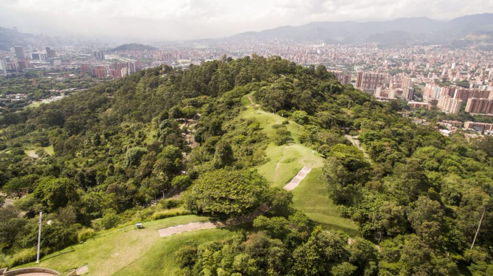
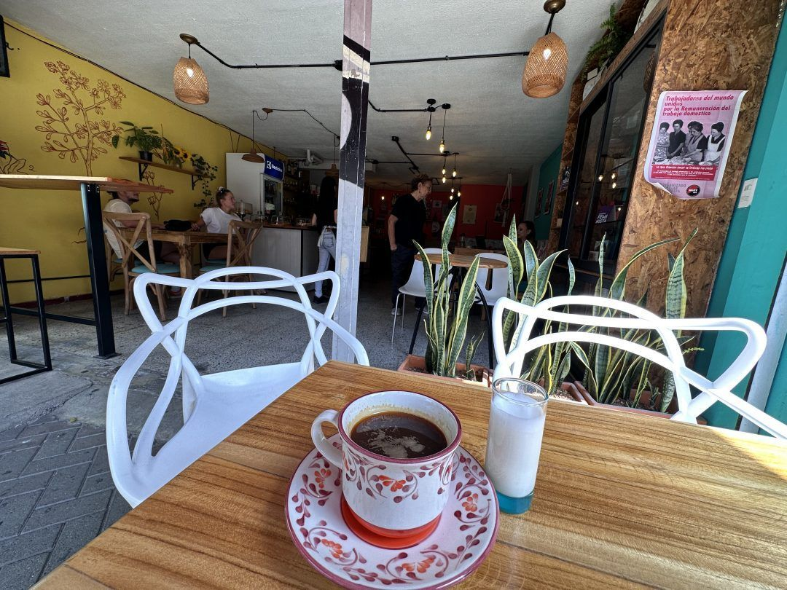
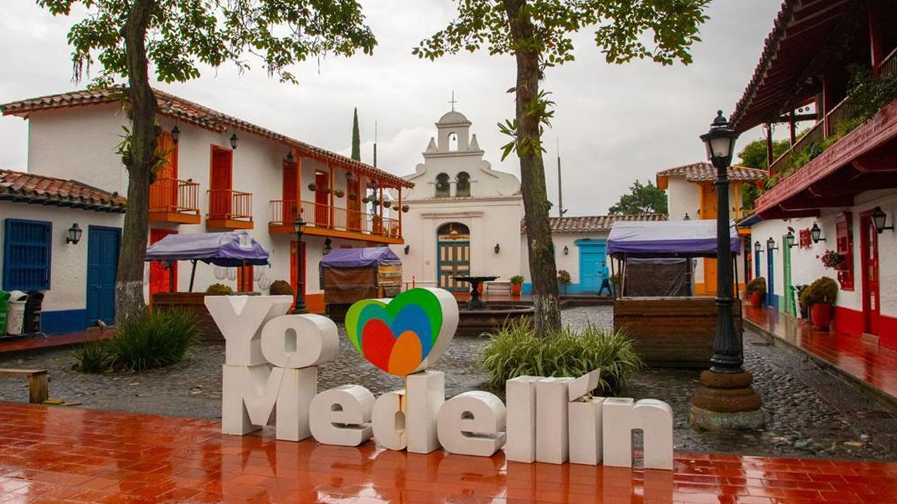

Naturaleza
Parques, jardines, bosques y espacios verdes para descansar y disfrutar del aire libre.
Ver lugares
Elige qué quieres descubrir en Medellín: naturaleza, café, arte, vistas y mucha historia.
Ver categorías
Parques, jardines, bosques y espacios verdes para descansar y disfrutar del aire libre.
Ver lugares

Lugares para contemplar Medellín desde las alturas y disfrutar de sus paisajes.
Ver lugares
Lugares emblemáticos que permiten conocer la historia y las tradiciones de la ciudad.
Ver lugares1
Naturaleza, café, arte, miradores o historia: empieza por lo que más te guste.
2
Pulsa «Ver lugares» y conoce los sitios de esa categoría.
3
Escoge un sitio, mira cómo llegar y disfruta la experiencia.
Naturaleza: Parque Arví
Si quieres desconectarte de la ciudad, empieza por aquí: un espacio verde para descansar y disfrutar del aire libre.